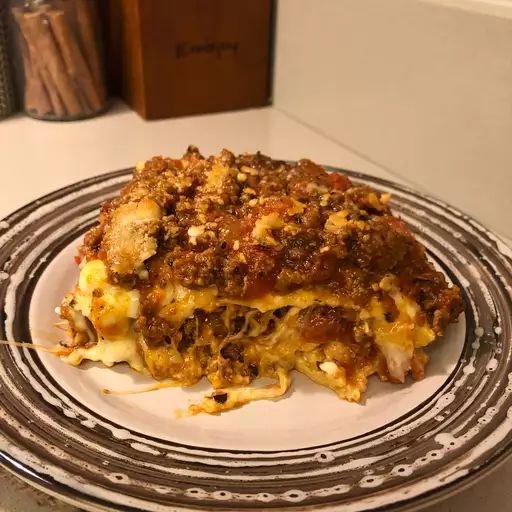

Homemade Lasagna

Description
This is my mom's special homemade lasagna recipe with a meaty, made-from-scratch tomato sauce
and a deliciously cheesy filling. A more traditional homemade lasagna filling would be made
with ricotta but my mom's recipe calls for a blend of small-curd cottage cheese and Parmesan.
I have found none better anywhere. Serve with a leafy green salad and crusty garlic bread.
Ingredients
- 1/2 pound pork
- 1/2 pound ground beef
- 1/2 cup minced onion
- 1 can crushed tomatoes
- 1 can tomato sauce
- 2 tablespoons fresh parsley
Steps
- Combine pork and ground beef in a large, deep skillet over medium-high heat; cook
and stir until browned and crumbly, 5 to 7 minutes. Add onion and cook until translucent,
about 5 minutes.
- Stir in crushed tomatoes, tomato sauce, 1 tablespoon fresh parsley, garlic, basil, salt,
oregano, and sugar. Reduce heat to medium-low and simmer, stirring occasionally,
for 30 minutes.
- While the sauce is simmering, bring a large pot of lightly salted water to a boil. Cook lasagna
noodles in the boiling water, stirring occasionally, until tender yet firm to the bite, 8 to 10
minutes. Drain and set aside.
- While the noodles are cooking, preheat the oven to 375 degrees F (190 degrees C).
- Bake in the preheated oven for 30 to 40 minutes.
Remove the foil and bake until cheese is golden brown, 5 to 10 more minutes.
- Remove from the oven and let stand for 10 minutes before cutting and serving.